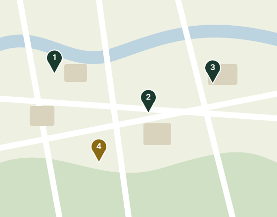

Pontos de coleta e frentes de atuação
Encontre o ecoponto ou posto de entrega voluntária mais próximo de você, na Zona Leste de São Paulo.
Pontos de coleta disponíveis
Veja os materiais aceitos em cada ponto.
-
Ecoponto Tatuapé
Rua Melo Freire, s/n (próximo ao Metrô Tatuapé)Materiais aceitos:
Ver no mapa — Ecoponto Tatuapé (abre em nova aba) -
Posto Reciclê Bairro — Itaquera
Avenida Jacu-Pêssego, 1200 — ItaqueraMateriais aceitos:
Ver no mapa — Posto Reciclê Bairro — Itaquera (abre em nova aba) -
Ecoponto Penha
Rua Dr. João Ribeiro, 450 — PenhaMateriais aceitos:
Ver no mapa — Ecoponto Penha (abre em nova aba) -
Ponto Verde Mooca
Rua dos Trilhos, 800 — MoocaMateriais aceitos:
Ver no mapa — Ponto Verde Mooca (abre em nova aba)

Nossas frentes
Mapeamento
Reunimos e mantemos atualizada a lista de pontos de coleta e dos materiais que cada um recebe.
Apoio às cooperativas
Aproximamos moradores de cooperativas de catadores, valorizando o trabalho e a geração de renda.
Educação ambiental
Oficinas de reciclagem e mutirões de limpeza que levam a informação para dentro da comunidade.
O que nossos vizinhos dizem
Depoimentos ilustrativos, criados para este projeto acadêmico.
O ponto de coleta do Tatuapé é super organizado. Levo meus recicláveis todo sábado e o atendimento é sempre muito rápido!
Muito bom ter um posto em Itaquera que aceita óleo de cozinha. Antes eu não sabia onde descartar sem poluir o meio ambiente.
O Reciclê Bairro facilitou muito a nossa rotina de reciclagem no condomínio. Nota dez pela iniciativa na Zona Leste!